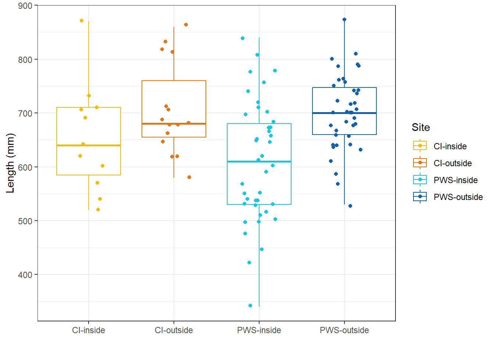
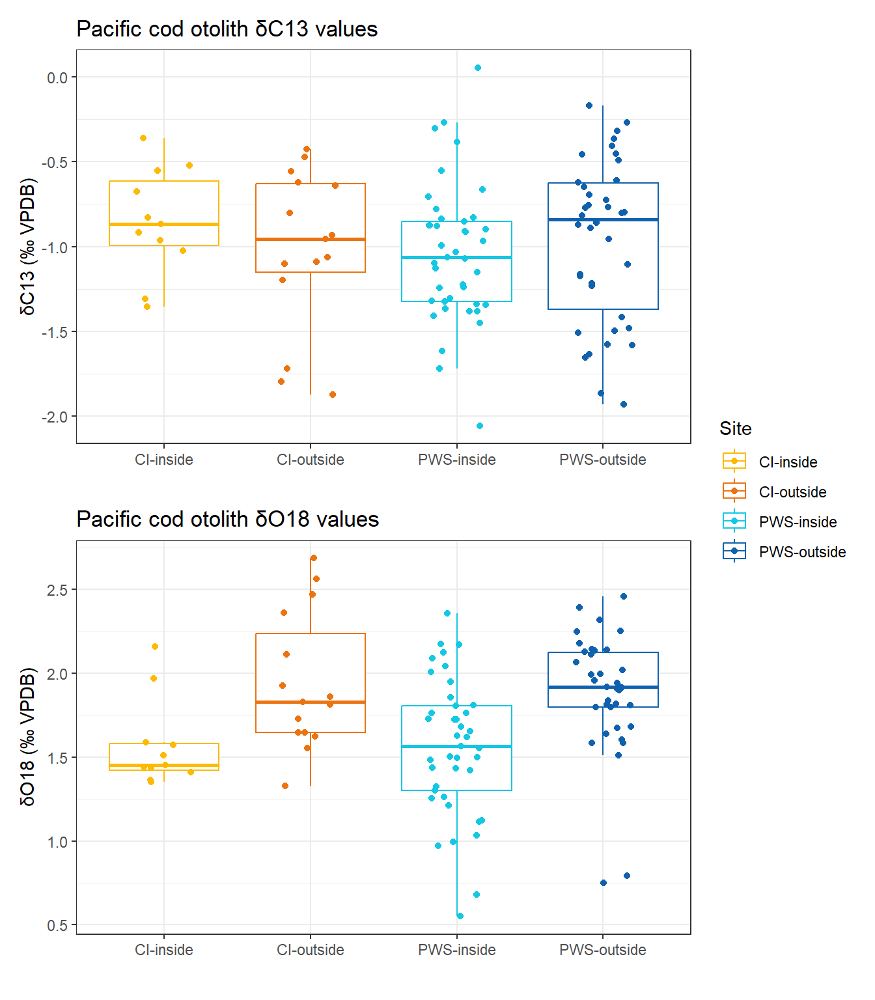

Stable isotope analysis of Gulf of Alaska Pacific cod otoliths
Contributors
Beth Matta, Kali Stone, Brenna Hsieh, Kathrin Bayer, Derek Chamberlin, Esther Goldstein - Age and Growth Program
Ingrid Spies, Laura Timm, Sarah Schaal
This document is preliminary; please check all statements highlighted in red for accuracy.
Background
This report describes an analysis of stable isotopes (oxygen-18 and carbon-13) in otoliths of Pacific cod collected inside and outside fjord habitats in Cook Inlet and Prince William Sound in the Gulf of Alaska. This is a supplementary analysis to a larger genetics project exploring whether Pacific cod are locally adapted to these important coastal habitats. Otoliths were analyzed to determine whether thermal experience differs significantly inside and outside fjords. Otoliths are inert, calcium carbonate structures in the head that start forming before hatching and continue growing until death, thereby providing a lifetime record of experienced conditions. Oxygen-18 varies inversely with temperature. Carbon-13 is influenced by dietary carbon sources, metabolic rate, dissolved inorganic carbon in the ambient water, and potentially, hypoxic conditions.
Methods
Otoliths (sagittae) were collected by a port sampler from commercial catches of Pacific cod inside and outside fjord habitats in Prince William Sound and Cook Inlet. Otoliths were cleaned of residual tissue, dried, and stored in paper envelopes before being transferred to glass vials. Prior to further analysis, otoliths were sonicated in Nanopure water for 5 minutes and allowed to air dry. Using a glass mortar and pestle, one otolith from each pair was ground to a fine powder, wrapped in clean aluminum foil, and sent to the University of Arizona’s Lab Name for analysis of oxygen-18 (\(\delta\)18O) and carbon-13 (\(\delta\)13C) isotopes. The mortar and pestle was wiped clean using 95% reagent-grade ethanol between grinding each otolith to avoid cross-contamination. Only fish with two intact otoliths were included in this analysis (the other otolith from each pair was saved for potential future image analysis and age determination).
Add more info about U of A methods
Values of \(\delta\)18O and \(\delta\)13C are reported in per mille Vienna Pee Dee Belemnite (‰ VPDB).
Preliminary results
Otoliths from 105 fish were analyzed for stable isotopes (Table 1). Analytical precision (1 \(\sigma\)) of values was ±0.11 for \(\delta\)18O and ±0.08 for \(\delta\)13C.
| Location | Mean O18 | SD O18 | Mean C13 | SD C13 | Count |
|---|---|---|---|---|---|
| CI-inside | 1.57 | 0.26 | -0.85 | 0.31 | 11 |
| CI-outside | 1.94 | 0.41 | -1.02 | 0.47 | 15 |
| PWS-inside | 1.56 | 0.41 | -1.04 | 0.41 | 41 |
| PWS-outside | 1.89 | 0.35 | -0.96 | 0.48 | 38 |
Fish were generally bigger outside fjords than inside fjords, though size ranges overlapped (Figure 1).

Values of \(\delta\)13C were similar across areas, but those of \(\delta\)18O were consistently higher outside fjords (Figure 2), and independent of fish length (Figure 3).

Potential next steps
- Parse out data into Site (Cook Inlet, Prince William Sound) and Habitat Type (Inside/Outside Fjords) and determine if above conclusion holds (multiple regression).
- Estimate temperature (average lifetime thermal experience) from O18 values (use species-specific fractionation equation from Craig’s experimental work)
- Decide whether to age these fish or perform image analysis
- Compare with conclusions from genetics study
Anything else I’m forgetting??